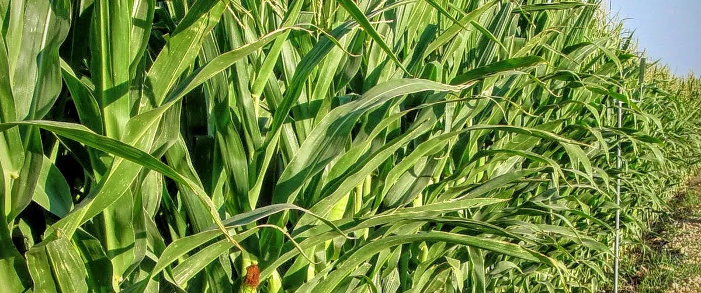
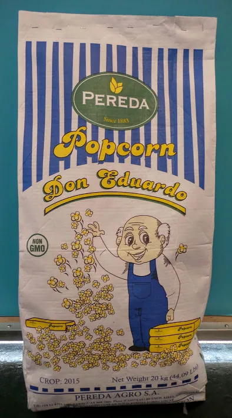

Productos / Maíz pisingallo
Productos
Maíz pisingallo.
La pampa húmeda tiene condiciones excelentes para el maíz, y Argentina es reconocida en el mundo por su calidad.

Ficha técnica
Características.
La planta es muy parecida a la del maíz común, pero da un grano más chico y redondeado, destinado al consumo humano: con él se hace el popcorn, un snack sano, nutritivo y conocido en todo el mundo, casero o industrializado para microondas.
Su calidad se mide por tres valores: calibre, explosión y expansión.
- Packaging
- 5 kg
- 10 kg
- 20 kg
- 25 kg
- 50 lbs
- Calibre
65–75 granos en 10 g
Tamaño del grano: cuántos granos entran en 10 g (0,35 oz).
- Explosión
Mayor a 97%
Porcentaje de granos que se expanden hasta formar un pochoclo.
- Expansión
- 38/40
- 40/42
- 42/44
- 44/46
Cuántas veces aumenta el volumen del grano respecto de su tamaño inicial.
Contacto
¿Necesitás maíz pisingallo?
Contanos el calibre, el packaging y el volumen, y armamos la propuesta.